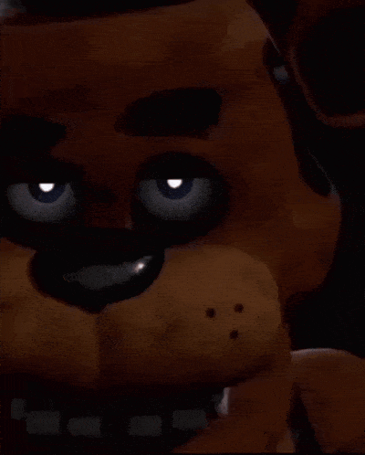
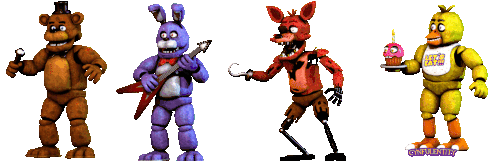

A franquia de games Five Nights at Freddy's A série principal consiste em nove jogos, que ocorrem em locais relacionados a uma fictícia franquia de restaurantes familiares chamada Freddy Fazbear's Pizza, que tem esse nome graças ao seu mascote, o animatrônico Freddy Fazbear.
|  |  |